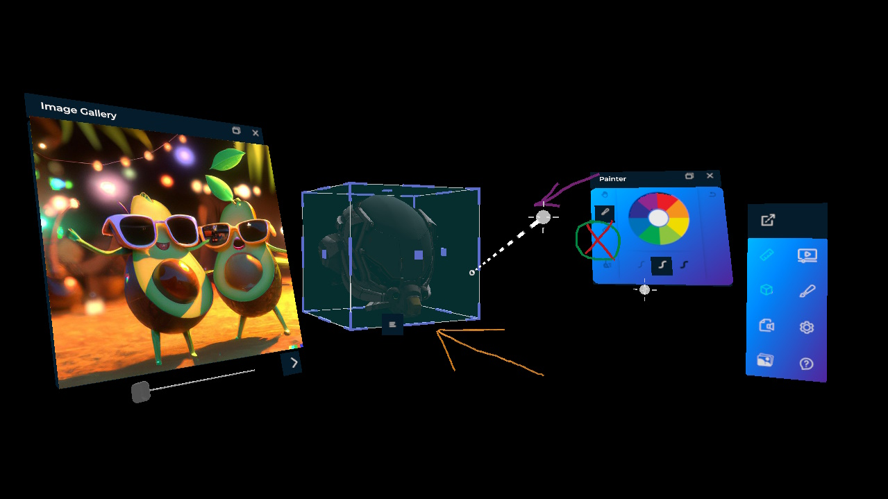
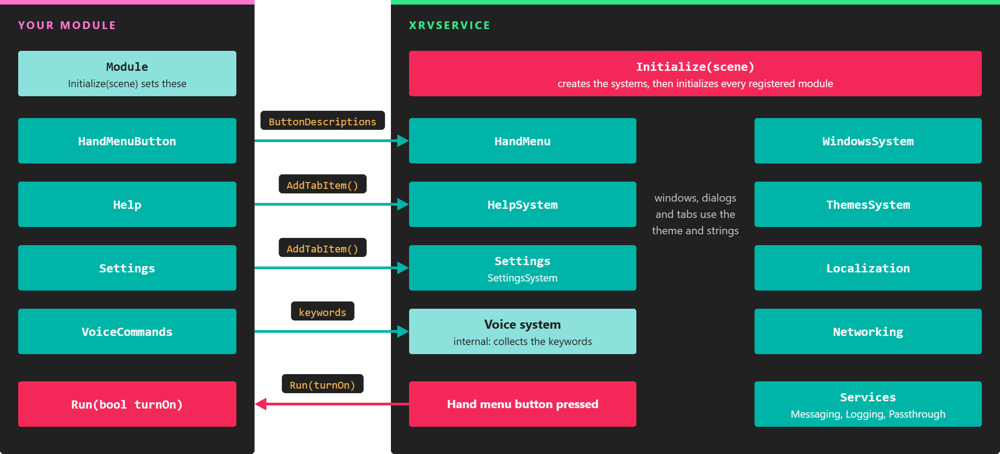

Extended Reality Viewer (XRV)

XRV (Extended Reality Viewer) is the framework we use to build custom XR applications for our customers. It gathers in one library the features those applications keep needing: a hand menu, floating windows and dialogs, settings and help windows, themes, localization, file storage, and messaging. On top of it, ready-made modules add features such as a 3D model viewer, an image gallery, a ruler, and a painter.
XRV is built on the MRTK add-on, so it reuses its pointers, buttons, sliders, and configurators. Like MRTK, it is open source under the MIT license, in the XRV repository on GitHub.
Architecture
XrvService is the entry point. You register it in the application container, add the modules you want, and call Initialize from an XRScene. It then creates each system and wires every module into them: a module's hand menu button goes to the hand menu, its help and settings tabs go to the help and settings windows, and its voice commands are collected by the voice system.

XrvService owns the systems; modules plug into them through the properties of the Module class.
Supported devices
Most features work on every platform, but some depend on the device. XRV runs on:
- Meta Quest 1, 2, 3, and Pro.
- Pico XR headsets.
- Windows, with the MRTK desktop emulation, for development and testing.
Note
Microsoft HoloLens 2 is no longer supported.